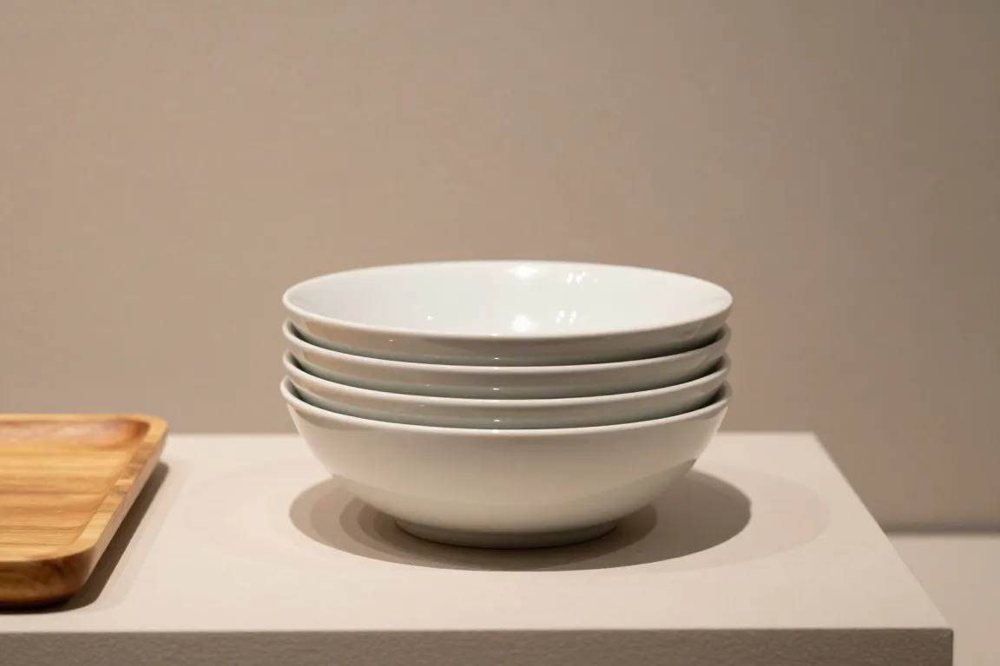

керамика · 1950–1975 · также: Северная современная керамика, Финская и шведская студийно-промышленная посуда, Штабелируемая северная посуда
Простая штабелируемая посуда с фабрик Финляндии и Швеции. Художники штата фабрики проектируют простые формы из немногих очертаний, глазуруют их сатиновыми или матовыми цветами и добавляют тихий след руки.

Главная идея
Несколько простых штабелируемых форм, тёплая сатиновая глазурь и тихий след руки дают посуду, сделанную на фабрике, но ощущаемую человеческой.
Принципы дизайна
Проектируйте сервиз из немногих форм, пригодных для любой трапезы, и пусть они ставятся колонной.
Делайте каждую вещь простым телом и оставляйте поверхность глазури.
Глазуруйте сатиновым или матовым цветом: белый, песочный, серый, оливковый или глубокий синий.
Добавляйте небольшой рельеф рёбер или тонкую врезанную линию и не больше.
Пусть сервиз проектирует художник, а не стилист, и ставьте имя на дне.
Делайте из фабрики студию: художник работает над линией и над единичными вещами.
Берите стенку 4–6 мм, достаточно крепкую для ежедневного использования и штабелирования.
Антипаттерны
Золотой ободок и цветочный узор
Глянцевый яркий цвет в манере американской закусочной